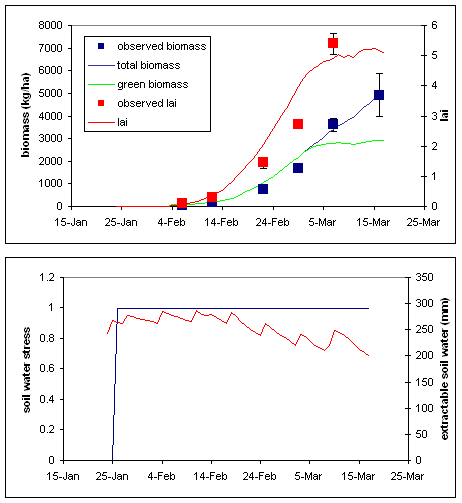
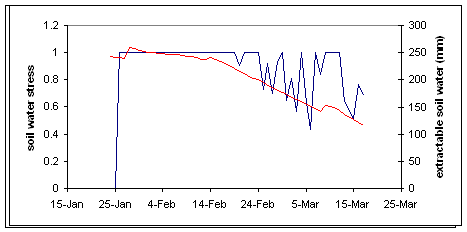
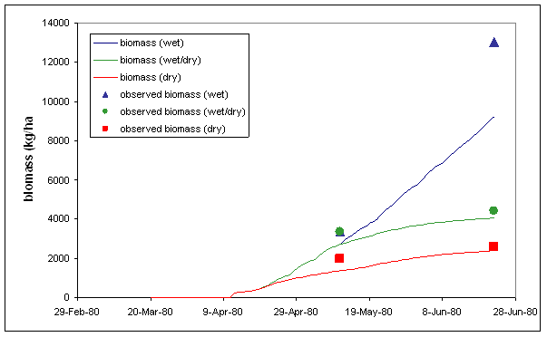
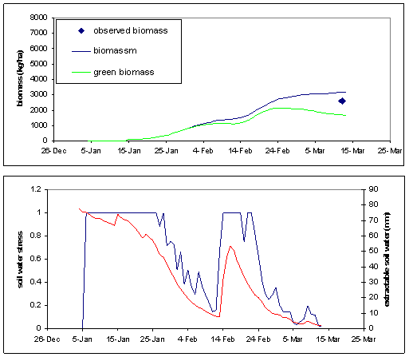
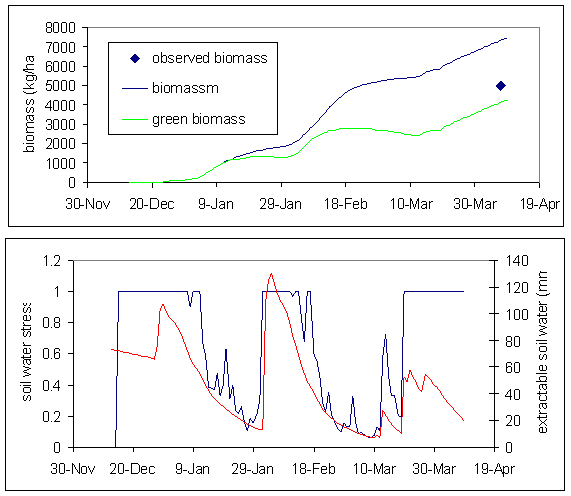

Michael Robertson/Jacqui Hill 4th May 2004
Introductory notes
The lablab module has received testing against four datasets from Queensland and the Northern Territory Cultivars currently simulated are: Highworth (annual) and Endurance (perennial) Users are invited to provide feedback on module performance to the convenors, Michael Robertson ( Michael.Robertson@csiro.au ) and Jacqui Hill ( Jacqueline.Hill@csiro.au ).
Goto generic Plant model documentation
Science notes
Refer to the PLANT module science document for detail on the definition of parameters.
Syntax examples
To sow the annual cultivar: if day = 24 and year = 2000 then lablab sow cultivar = highworth, plants = 5 (/m2), sowing_depth = 40 (mm) endif To sow the perennial cultivar: if day = 24 and year = 2000 then lablab sow cultivar = endurance, crop_class = small_leaf, plants = 5 (/m2), sowing_depth = 40 (mm) endif To kill the stems of the perennial cultivar over winter in order to stall progression into higher phenological states: if (mint < 5) and (lai < 0.5) and (day > 120 or day < 240) then lablab kill_stem endif
Module performance
Figures below show module performance for both cultivars at Gatton in Qld over one season (sown 24 th Jan 2000) under irrigated and dryland conditions; cultivar Highworth at Katherine in NT over one season (sown 1 st April 1980) under irrigated and dryland conditions; cultivar Highworth at Brian Pastures Research Station near Gayndah in Qld over two seasons (sown 4 th Jan 2000 and 14 th Dec 2000) under dryland conditions.
Gatton, Highworth irrigated

Gatton, Highworth dryland

Gatton, Endurance irrigated Katherine, Highworth Brian Pastures,

Highworth, 2000 Brian Pastures,

Highworth, 2001
